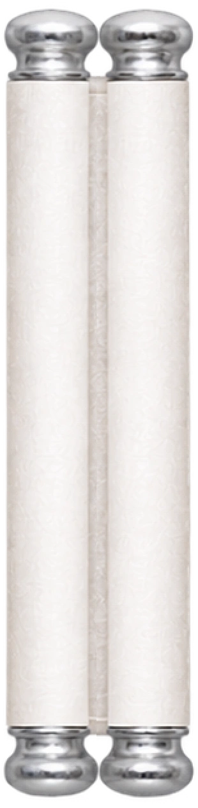
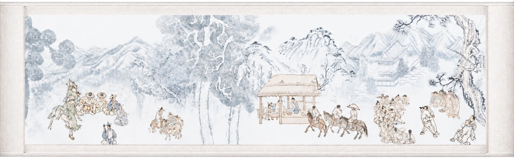
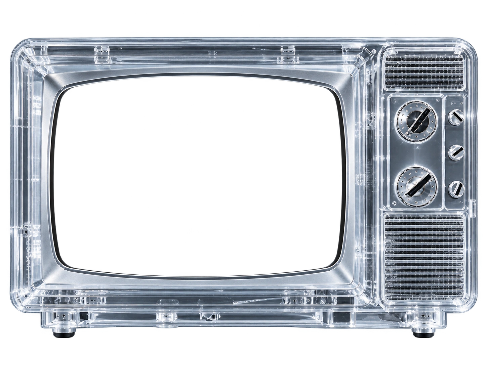

18TH CPUNGSOKHWA


1880sNEWSPAPER
CLICK / DRAG TO UNFOLD →
1960sRADIO

1960sCRT TELEVISION
CHANNEL
EXPLORERTURN THE DIAL
OR USE ← →
EXPLORERTURN THE DIAL
OR USE ← →
AWAITING SOURCE
CH.01VIDEO SLOT · 1280×720CH.01 · K-POP
SING
AS ONE.
같은 노래를 부르고 같은 순간에 반응하는 방식.CH 01 STEREO

DIAL · DRAG · WHEEL · ARROW KEYS · 1—5
2000sPC / INTERNET
2010sSMARTPHONE

12,800 VOICES.
THE MOMENT THE LIGHTSTICKS MOVED AS ONE.
♡ 18.2K ◯ 428SIDE DISH.
A TABLE BECOMES SHARED THE MOMENT FOOD STARTS MOVING.
♡ 9.4K ◯ 216WE SHARED.
NINETY MINUTES, ONE REACTION.
♡ 21K ◯ 603